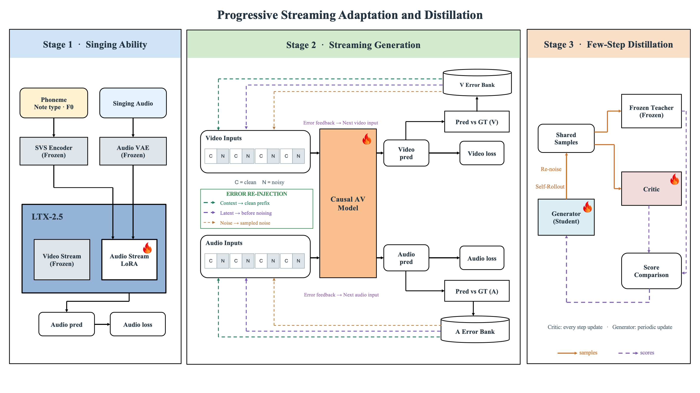
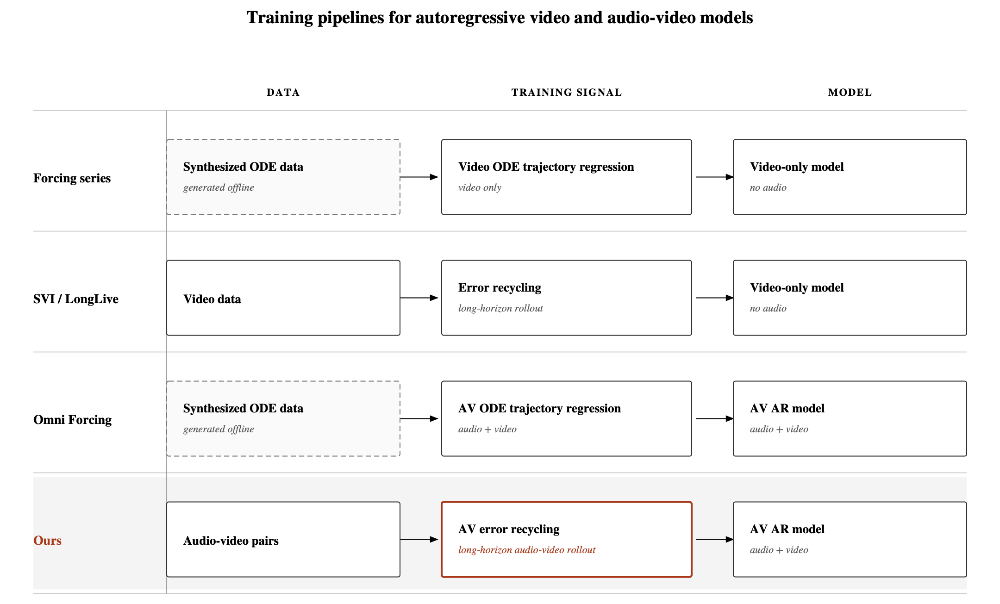

1
Joint singing + video
The first system to generate the singing voice and the moving image together from text and music, with block-causal inference at few denoising steps per block.
To our knowledge, the first model that generates the singing voice and the moving image jointly from text and music — rolling out minute-level audio-video from 5-second training clips, with streaming inference.
We present LTX2.5-SVS, to our knowledge the first model that jointly generates singing voice and video from text and music conditions. Our system is built from a bidirectional 22B audio-video diffusion foundation through a three-stage pipeline: (1) singing-voice synthesis (SVS) capability training on the bidirectional foundation, injecting lyric, melody, and singer-timbre conditioning through full cross-modal attention adaptation; (2) block-causal adaptation, which converts the bidirectional model into a dual-stream, block-causal generator trained by teacher forcing with closed-loop error recycling; and (3) distribution-matching distillation (DMD) with self-forcing that compresses the block-causal generator to few denoising steps per block while preserving singing-driven lip sync. Trained on short (≈5 s) clips, the block-causal generator produces minute-level audio-video in a single autoregressive rollout.
The first system to generate the singing voice and the moving image together from text and music, with block-causal inference at few denoising steps per block.
Per-modality error buffers and injection paths equip the 22B bidirectional model with autoregressive capability — paired-stream recycling on top of on-policy teacher forcing.
0.89 s time-to-first-chunk and 22.7 FPS on a single NVIDIA A800 — an 11.6× throughput advantage over the dense baseline, with competitive singing quality.
Each stage starts from the checkpoint exported by the previous one, and each needs a different data recipe.

On the bidirectional 22B audio-video foundation, LoRA adapts only the audio stream. Frozen SVS conditions encode lyrics, note types, and F0; a reference clip carries singer timbre. Trained on ~3,000 hours of Chinese and English songs.
One teacher-forcing objective converts the model into a block-causal generator — no rollout, no ODE synthesis. The model's own prediction errors are replayed into its inputs through per-stream video and audio error banks.
Distribution-matching distillation with self-forcing compresses generation to four denoising steps per block, training the student on its own rollout distribution while keeping singing-driven lip sync intact.

Every clip below is a single autoregressive rollout. Clips are grouped by the length of the audio-video being generated: short phrases, ~10 s passages, and minute-level performances. Click a tile to play with sound.
No clips match this filter combination.
The singing module is scored against dedicated SVS systems on GMO-SVS; the joint generator is scored against two releases of the LTX-2.5 inference stack.
| System | Chinese | English | ||||||
|---|---|---|---|---|---|---|---|---|
| WER ↓ | SIM ↑ | FFE ↓ | SingMOS ↑ | WER ↓ | SIM ↑ | FFE ↓ | SingMOS ↑ | |
| Ground Truth | 0.074 | n/a | n/a | 4.624 | 0.197 | n/a | n/a | 4.441 |
| StyleSinger | 0.367 | 0.817 | 0.363 | 3.938 | n/a | n/a | n/a | n/a |
| TCSinger | 0.270 | 0.855 | 0.315 | 3.977 | 0.410 | 0.879 | 0.211 | 3.662 |
| YingMusic-Singer | 0.099 | 0.902 | 0.132 | 4.145 | n/a | n/a | n/a | n/a |
| Vevosing | 0.233 | 0.899 | 0.112 | 4.355 | 0.239 | 0.922 | 0.088 | 4.321 |
| SoulX-Singer | 0.065 | 0.898 | 0.046 | 4.453 | 0.174 | 0.917 | 0.037 | 4.300 |
| Ours | 0.120 | 0.864 | 0.092 | 4.362 | 0.283 | 0.901 | 0.073 | 4.164 |
Bold marks the best value per metric among compared systems (Ground Truth is the reference audio). SIM and FFE are unavailable for the English split of StyleSinger and YingMusic-Singer.
| System | VBench | VideoAlign | SyncNet | Efficiency | |||||||||
|---|---|---|---|---|---|---|---|---|---|---|---|---|---|
| Subject ↑ | Background ↑ | Motion ↑ | Dynamic ↑ | Aesthetic ↑ | Imaging ↑ | VQ ↑ | MQ ↑ | TA ↑ | Overall ↑ | LSE-C ↑ | TTFC | FPS ↑ | |
| Audio-driven baseline | 0.927 | 0.942 | 0.993 | 0.690 | 0.592 | 61.54 | −0.375 | −0.256 | 1.247 | 0.616 | 5.85 | n/a | n/a |
| Text-to-AV baseline | 0.932 | 0.947 | 0.994 | 0.640 | 0.579 | 58.49 | −0.504 | −0.269 | 1.150 | 0.377 | 1.12 | 105 s | 1.96 |
| Ours | 0.898 | 0.923 | 0.993 | 0.900 | 0.545 | 65.65 | 0.235 | 0.047 | 0.361 | 0.643 | 5.75 | 0.89 s | 22.70 |
VBench: subject, background, motion, dynamic, aesthetic, imaging. VideoAlign: visual quality, motion quality, text alignment, overall. LSE-C is SyncNet lip-sync confidence. TTFC and FPS measured on 10-second songs at 512×512 on a single NVIDIA A800. Best values in bold.
Reported honestly in the paper — the model is a research prototype, not a production singing system.
Minute-long rollouts stay largely stable, but backgrounds and objects drift over time, and the sung voice can gradually drift from the input lyrics.
Training covers too few scenes and styles. Prompts near the training distribution work well; out-of-distribution prompts degrade, and text alignment trails the baselines.
On GMO-SVS the singing module trails the strongest dedicated system by a modest margin. Timbre specification was not a focus of the few-step distilled model.